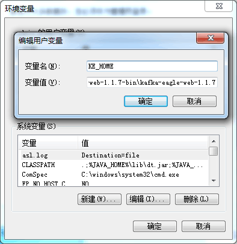

Install on Windows
> Installation > Install on Windows
Overview
This page explains how to install Kafka Eagle dependencies, download and install Kafka Eagle, get the service up and running on your Windows system, and the installation package details.
1. Install JDK
If there is a JDK environment on the Linux server, this step can be ignored, and the installation of the next steps. If there is no JDK, first to the Oracle official website to download JDK.
JAVA_HOME Configure
Run the downloaded *.exe file installation package directly, then configure environment variables:

2. Check JDK
Finally, we input java -version, according to the following information:
3. KE_HOME Configure
Configure environment variables,As shown in the following figure:
4. Start the Kafka Eagle server
Go to the %KE_HOME%\bin directory and click the ke.bat file.